Alef
Street artist and painter, Tel Aviv
Street art, painting, augmented reality and NFT
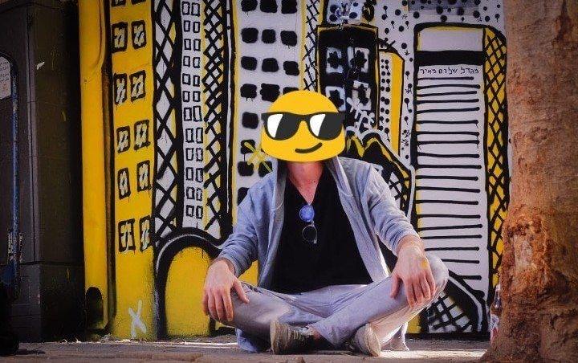
Works


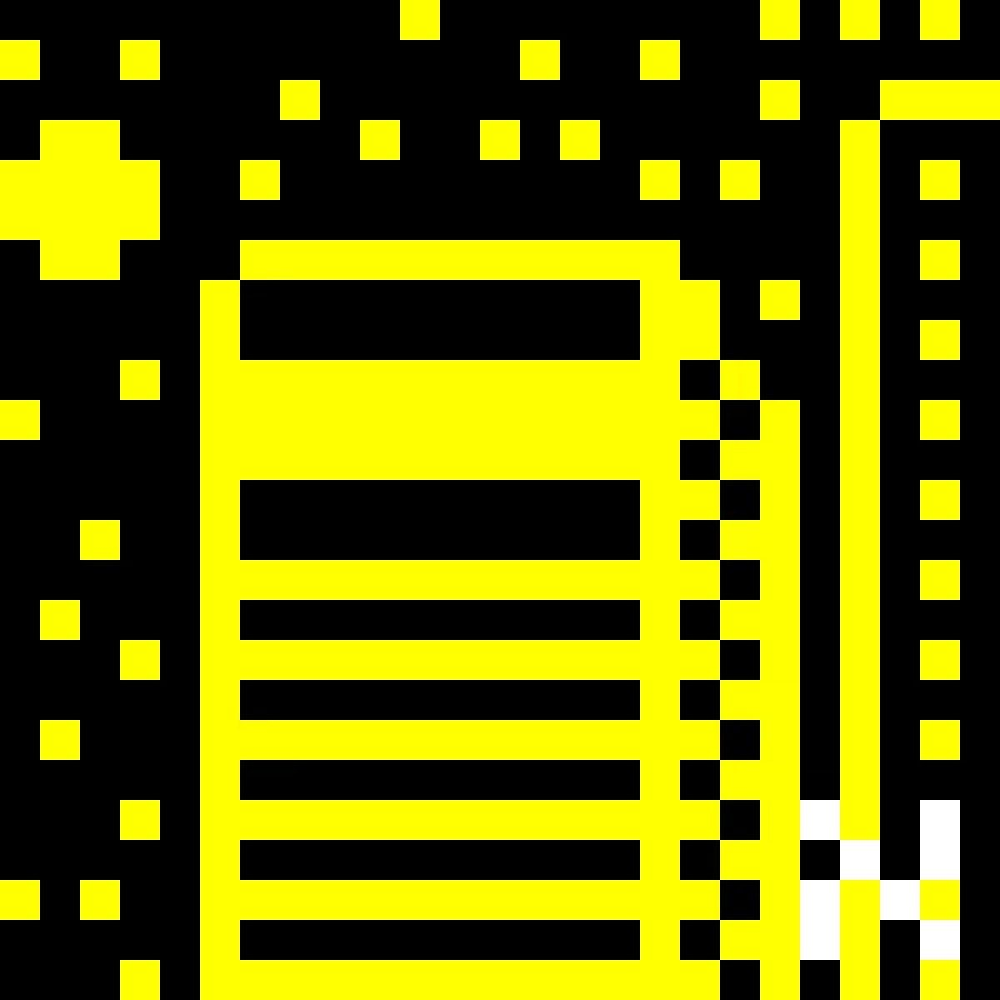
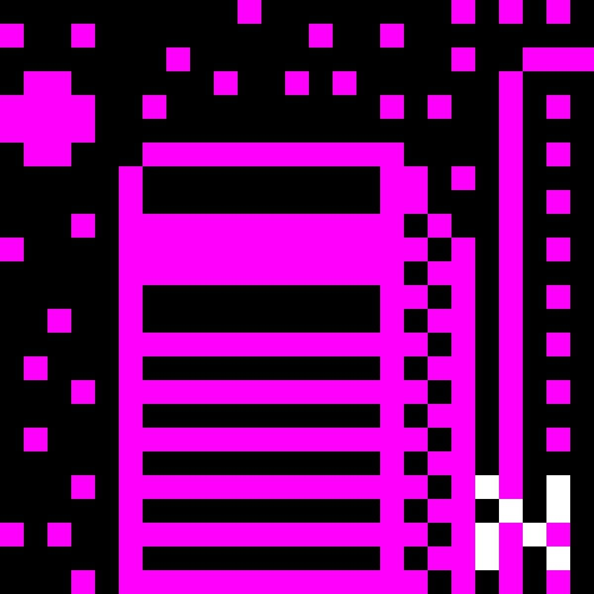
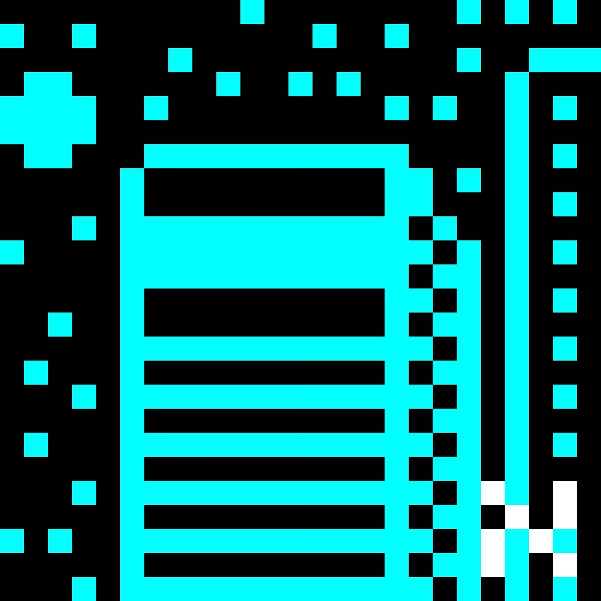
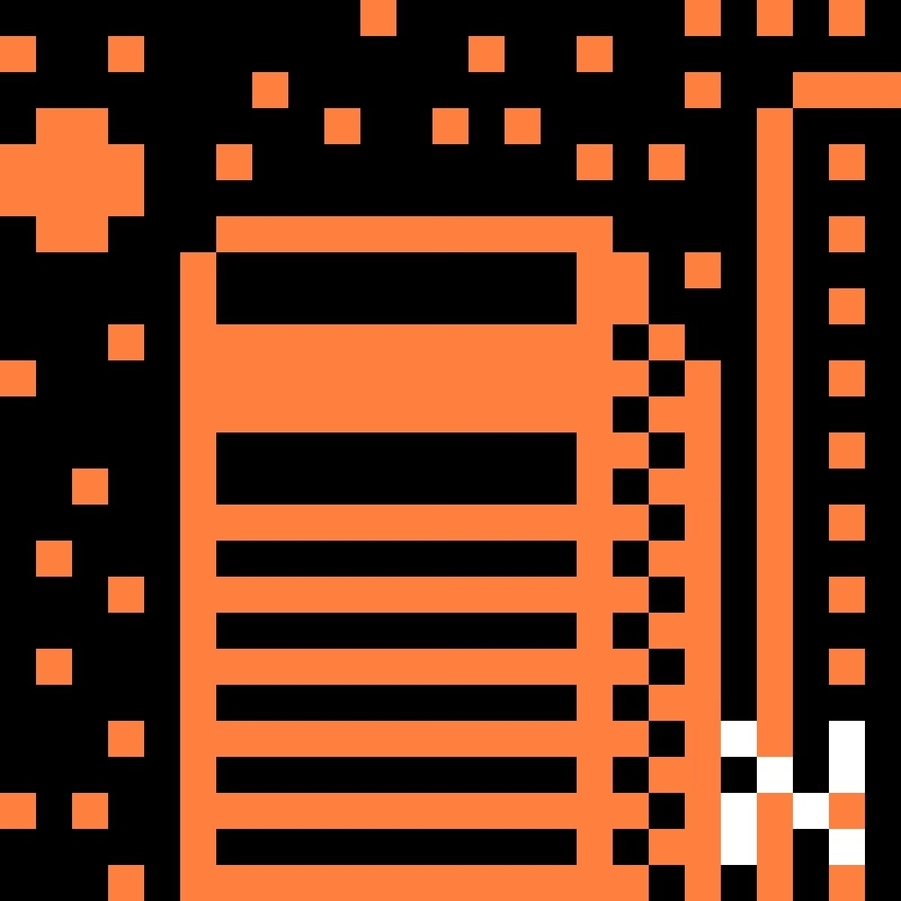
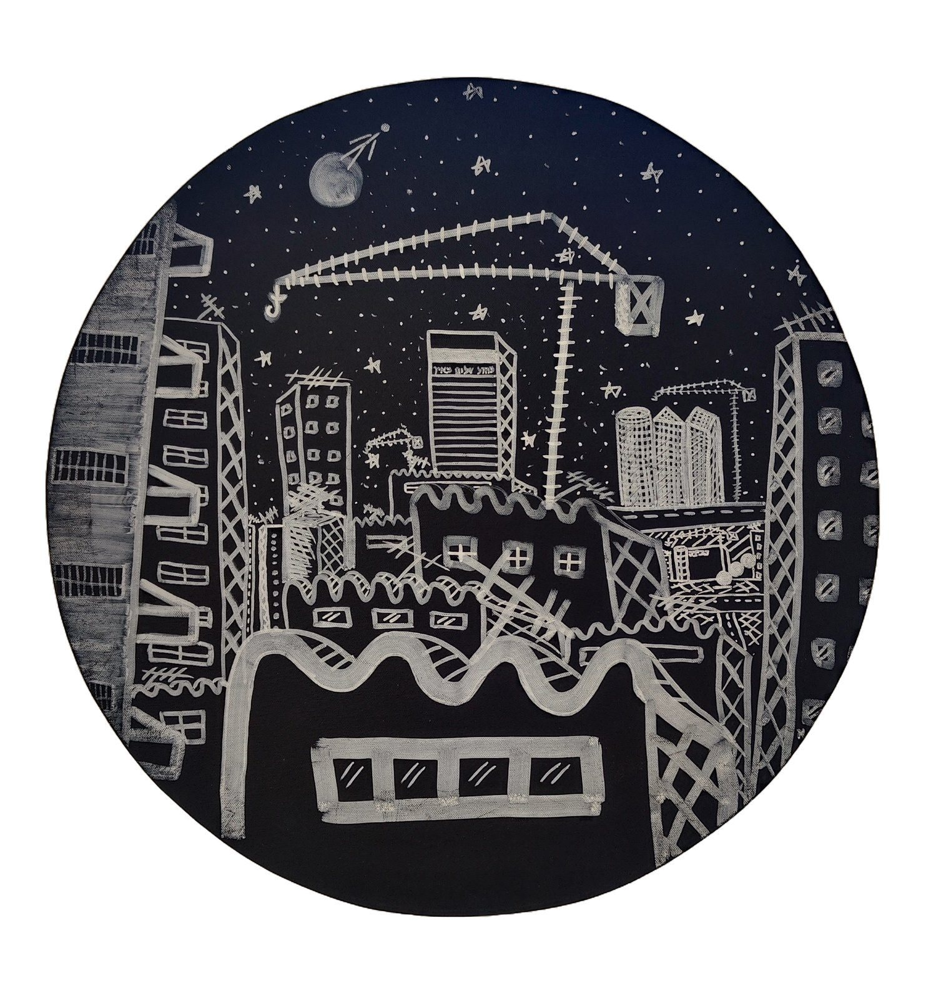
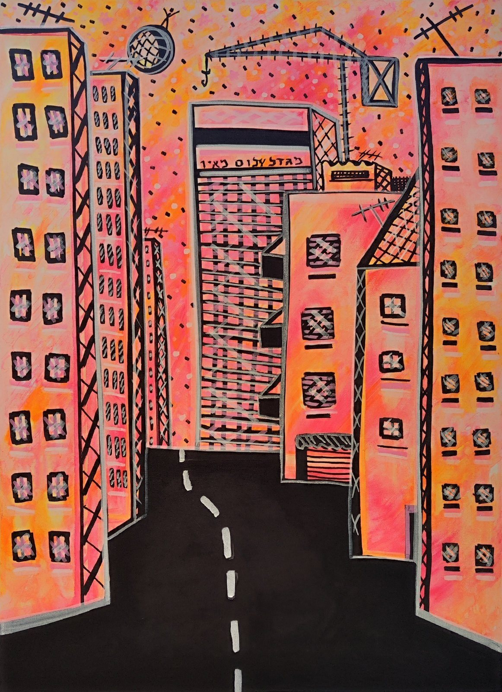
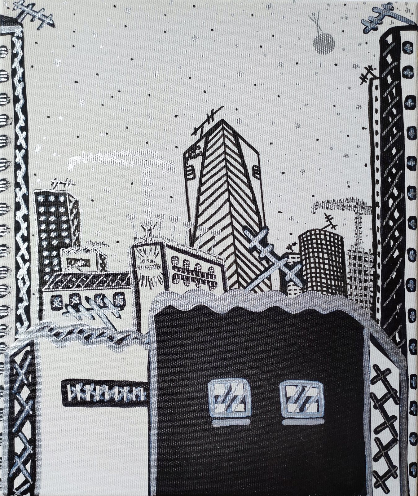
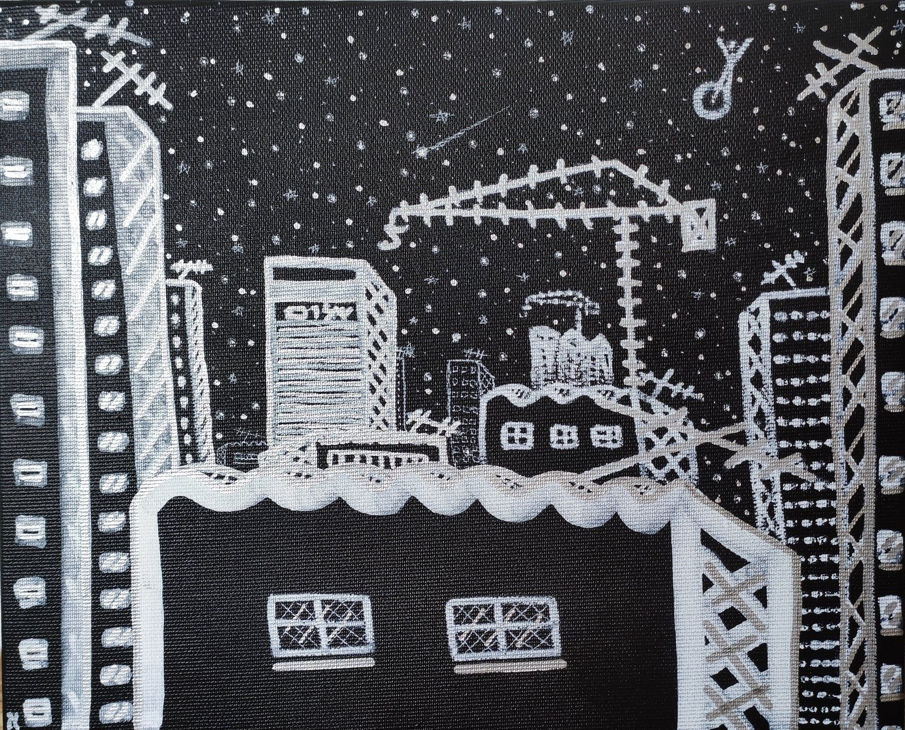
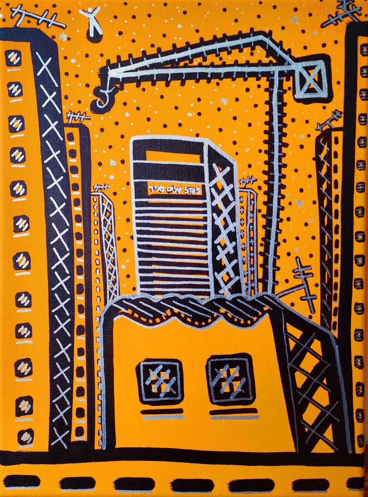
Alef is an anonymous multidisciplinary artist working on the streets of Tel Aviv and in the studio. His line-drawn cityscapes of buildings, towers and construction cranes celebrate the patient work of building, a theme summed up in his motto: building dreams day by day.
RSAS view. Cranes, towers and rooftops drawn with a free hand: Alef turns the city under construction into an optimistic, colourful emblem.
- Practice
- Street art, murals, canvases, augmented reality, VJ projection and NFTs
- Training
- Foundation in fine art, Central Saint Martins, London
- Persona
- Working as Alef since 2015
- Digital
- Crypto City Dreams NFT collection, 2021
- Based
- Tel Aviv
- Career stage
- Mid-career
- Market
- Primary
Biography
Practice
Alef paints cityscapes in which buildings, rooftop antennas and cranes jostle together, drawn with an imperfect, hand-made line and lifted with pops of colour. For him the crane is an international symbol of work, building and the dedication that sits behind any finished picture. Murals, painted doors and shutters carry the same imagery into the street.
The Shalom Meir Tower in Tel Aviv recurs again and again in his work as a symbol of resilience and renewal.
Street, studio and screen
His work moves between walls, canvases and digital media. He was among the first artists in Israel to combine street art with augmented reality, working with the Artvive app, and has created AR filters and VJ projection work. His Crypto City Dreams collection of 2021 presents the tower as ten hand-painted pixel artworks, with a share of proceeds pledged to Elifelet, a charity supporting children in the city.
Exhibitions
The Jerusalem Post has reported on Colours of Hope, a solo exhibition of his work at the Guerchon Gallery in Tel Aviv spanning nine years of practice.
The Artist and the Studio
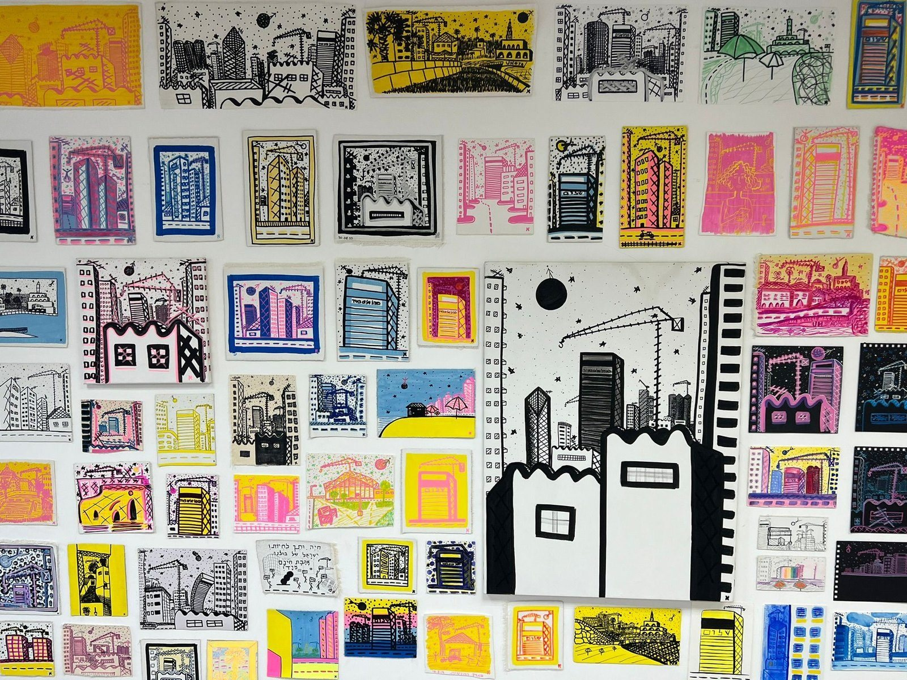
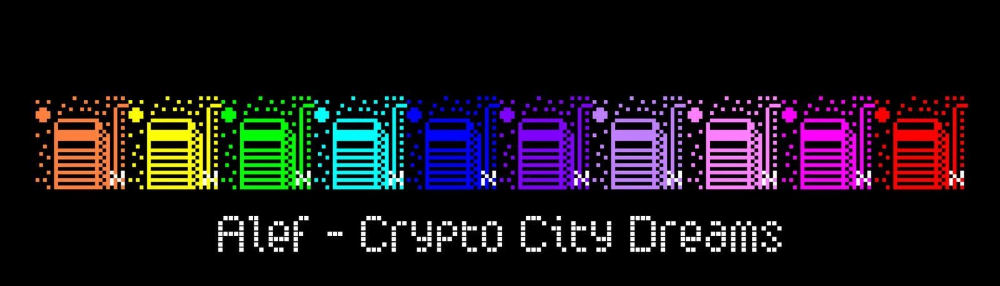
Sources
- Voyage LA, Life and Work with Alef, 19 June 2023
- The Jerusalem Post, New exhibit by anonymous Israeli graffiti artist Alef
- Guerchon Gallery artist page
- OpenSea, Crypto City Dreams collection
- Instagram @artbyalef (public profile)
- The Space Art gallery, Tel Aviv (thespaceart.co.il), artist listings, November 2026.
- Voyage LA, interview with Alef, June 2023.
- Guerchon Gallery, Tel Aviv, exhibition page, November 2026.
Last updated: 17 November 2026